Isola di Loreto
Lago d'Iseo
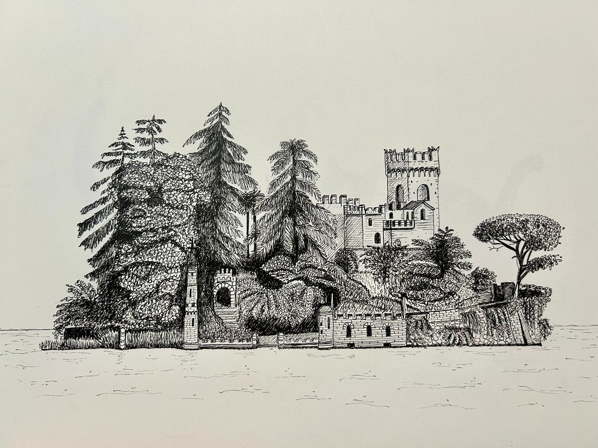
Una raccolta di disegni dedicati a castelli, monumenti, paesaggi e architetture storiche realizzati interamente a china.
Lago d'Iseo

Brescia
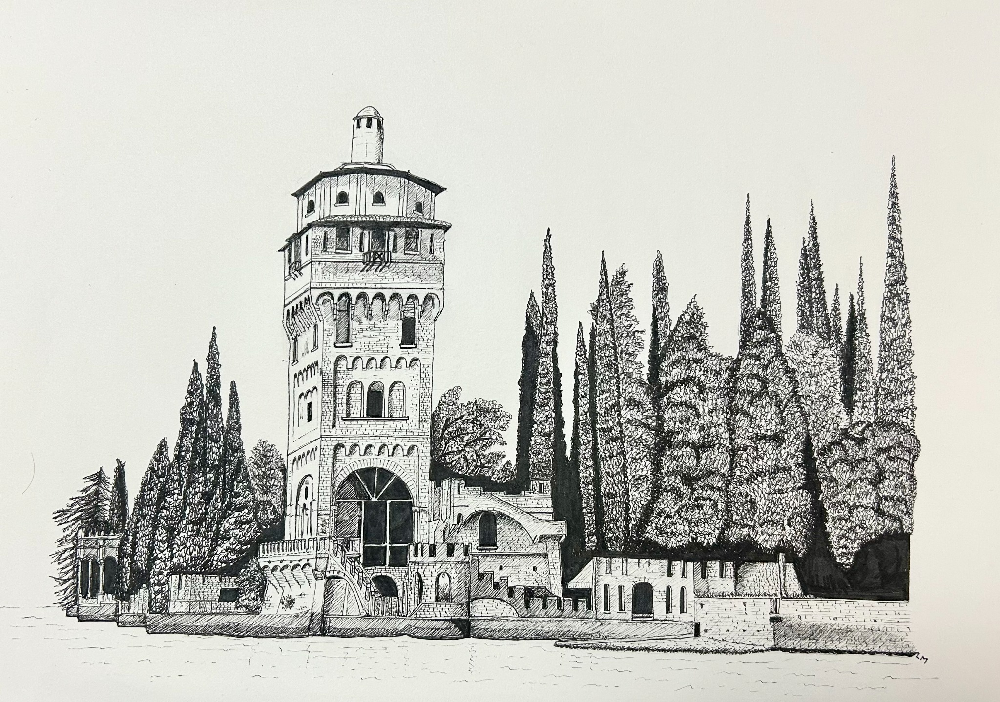
Gardone Riviera
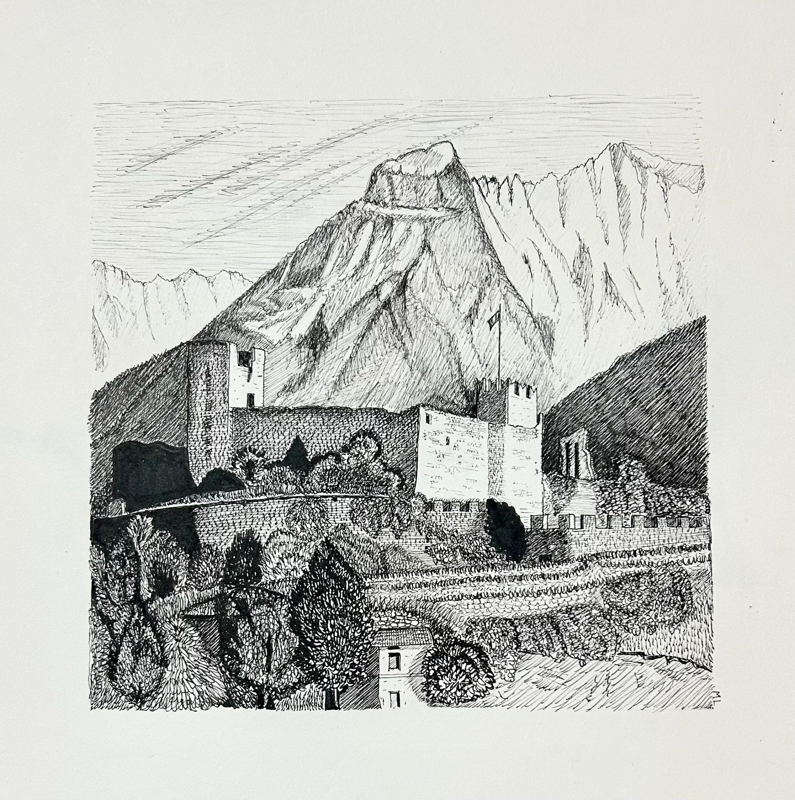
Valle Camonica
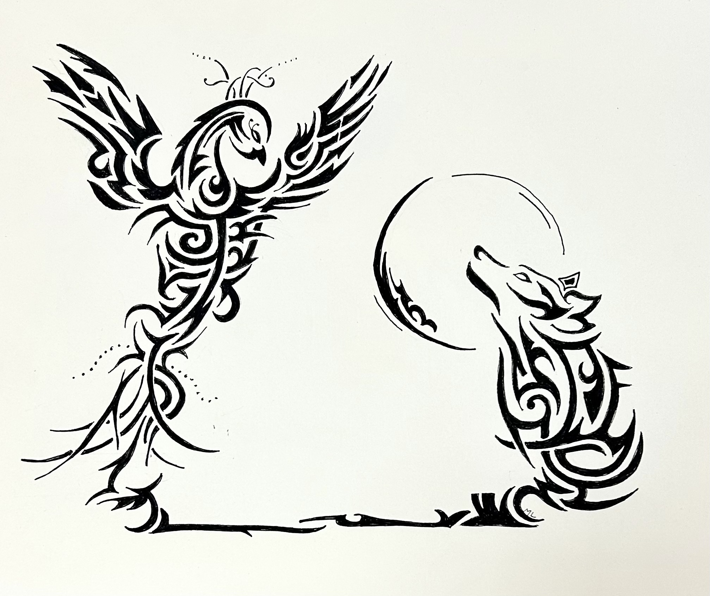
Composizione simbolica
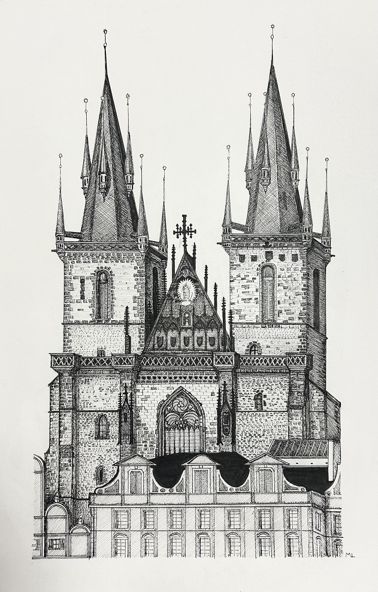
Repubblica Ceca
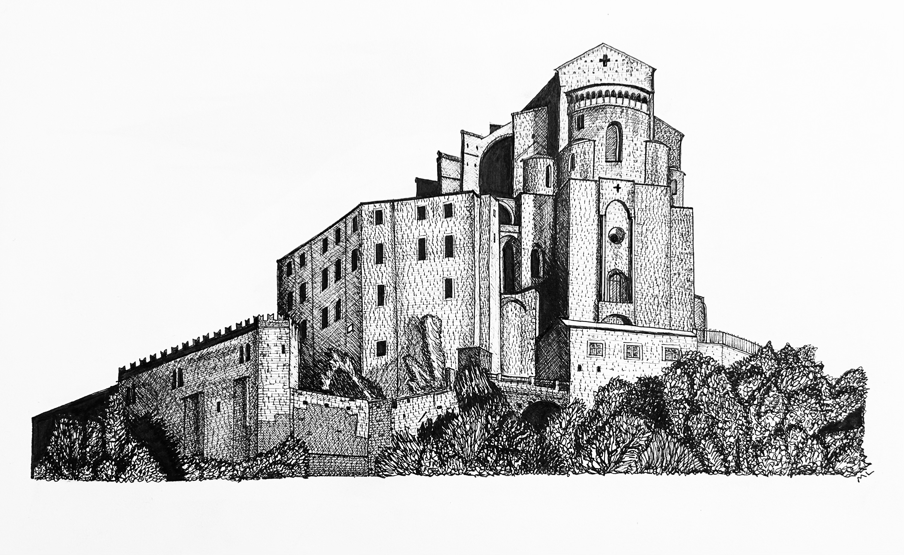
Piemonte
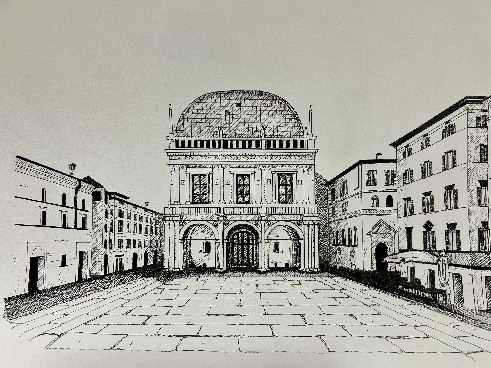
Brescia

Brescia Romana
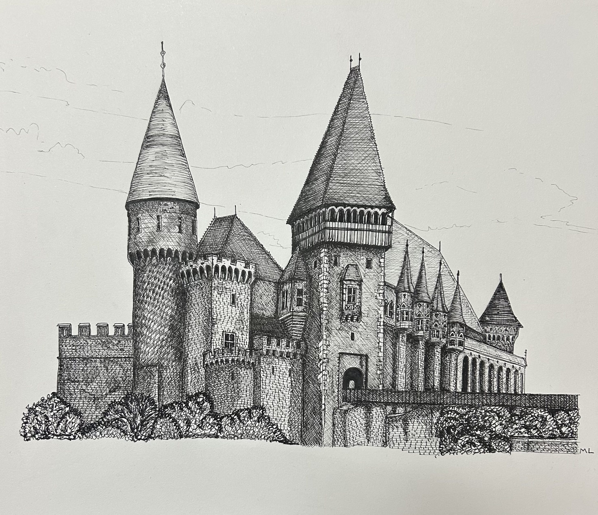
Hunedoara
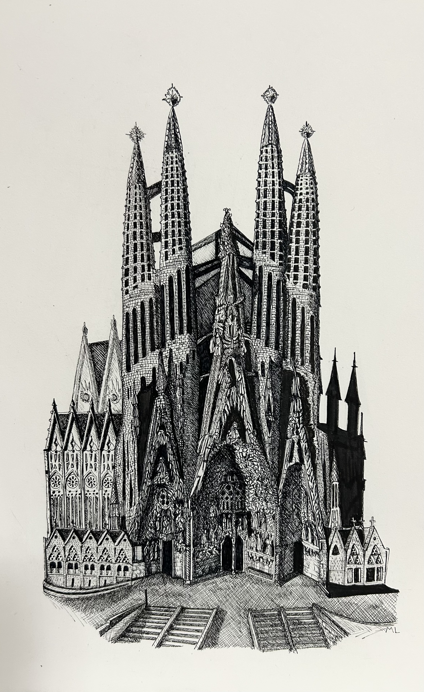
Barcellona
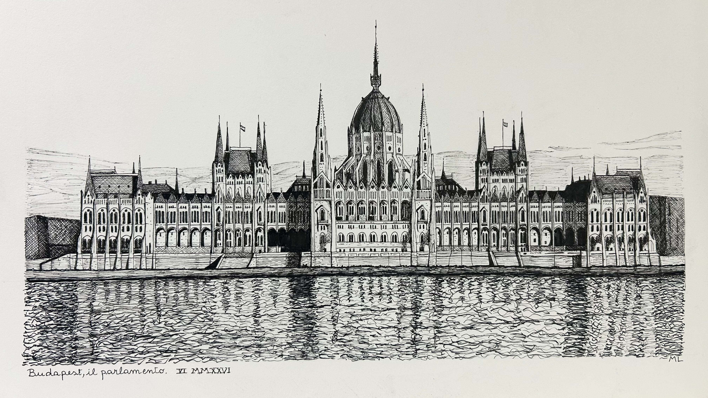
Budapest
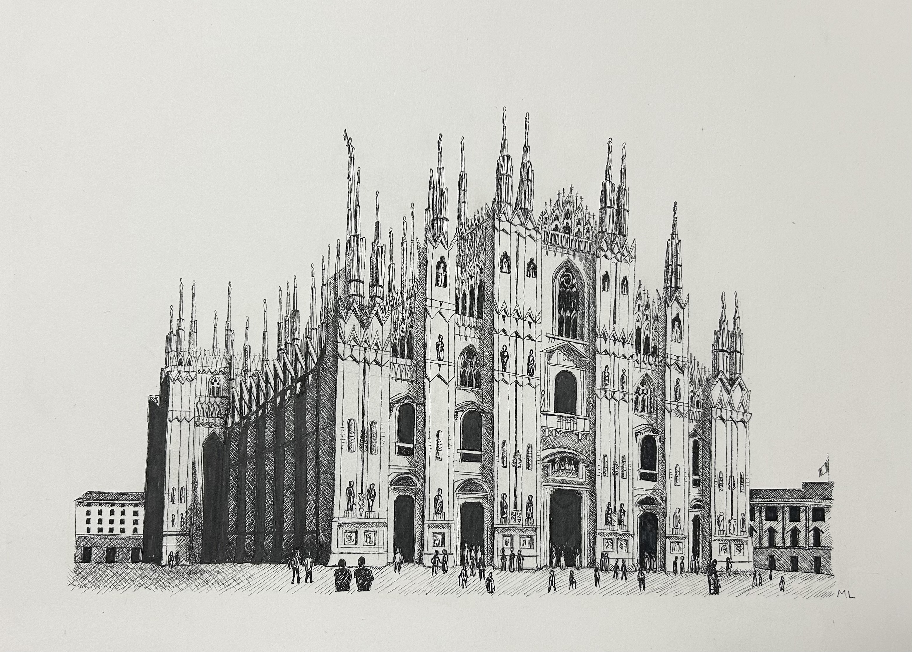
Milano
Michele Lorandi dedica la propria ricerca artistica al disegno a china. Le sue opere interpretano architetture storiche, castelli, paesaggi e luoghi di particolare valore culturale, attraverso un linguaggio fondato sul tratteggio, sulla precisione del segno e sull'equilibrio della composizione complessiva.